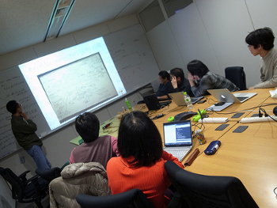
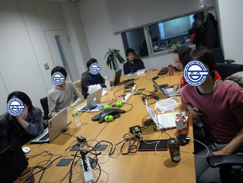

Metasepi作戦会議 第1回 議事録
Posted on February 3, 2013 / Tags: meeting
Table of contents
Metasepi作戦会議 第1回 を開催したでゲソ。 今回ははじめてのオフラインミーティングなので、プロジェクトの方向性の共有と各人のやりたいことの宣言に重点をしぼったでゲソ。 ワシとしてはこのプロジェクトでは作業分担や納期のようなものはもうけず、各々やりたいことを自由にやってほしいと思っているでゲソ。 ワシは他のメンバーが手をつけてない領域を重点的に見れば、自然と作業分担ができるはずじゃなイカ。 Easy come. Easy go. 気楽にいこうでゲッソ!
作戦会議 第2回はメンバーが手を動かした結果まとまった内容が集まった時点で開催することにするでゲソ。 なにか面白い調査結果や、面白い実装をした場合には Mailing list (en) に投げてみて欲しいでゲソ。 またWikiが欲しいなどのプロジェクト運用面についての相談/提案も上記メーリングリストどうぞでゲソー。
発表
プロジェクト説明 - @masterq_hentai
jhcのGCについて - @dec9ue
小二病でもGCやりたい from dec9ue
再入とは - @takeoka
Interrupt jhc from たけおか しょうぞう
Metasepiブログエントリの解説 - @masterq_hentai
メンバー各々の興味範囲ヒアリング + 自己紹介

- リクルート=>教育=>コンパイラ=>readxhc
- @khibino
- @yuga
- @1to100pen
- jhc=>GC
- @dec9ue
- jhc=>GC=>リージョン推論
- @tanimocchi
- jhc=>GHCコンパチ
- @khibino
- jhc=>RTS
- @yuga
- NetBSD
- @yshigeru
- NetBSD=>Haskell化
- @kei_q
- @yuga
- デザイン=>picokernel
- @takeoka
- ビジネス=>jhcコンサル
- @masterq_hentai
- 組み込みHaskell
- @takeoka
- @tanimocchi
会議の雰囲気
 
その他の写真は koie blog で見れるでゲソ。koieさんありがとうでゲソー。
議題リスト

blog comments powered by